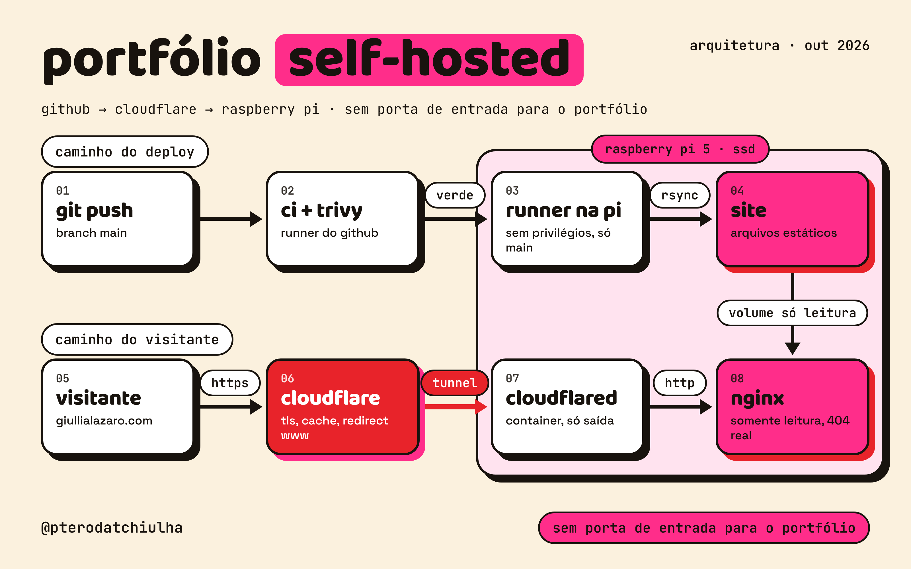

Portfólio Self-Hosted: do AWS para um Raspberry Pi

O site giullialazaro.com saiu da AWS (S3, CloudFront, Route 53 e ACM) e passou a rodar em um Raspberry Pi 5, publicado pela Cloudflare por um tunnel. Nenhuma porta de entrada é aberta para o portfólio: o container cloudflared só faz conexões de saída. A entrega continua automática: um push na branch main passa pelo CI com Trivy e, se tudo estiver verde, um runner self-hosted no próprio Pi atualiza o site.
- Cloudflare: DNS, TLS gerenciado, cache e redirecionamento de www para o domínio principal
- Cloudflare Tunnel (cloudflared): container que abre a conexão de saída até a Cloudflare, sem expor porta no roteador
- nginx: container com sistema de arquivos somente leitura, arquivos do site montados como somente leitura, 404 reais, gzip e headers de segurança
- Docker Compose: define os dois containers e uma rede privada entre eles, sem portas publicadas no host
- GitHub Actions + Trivy: CI em runner hospedado pelo GitHub, com varredura de vulnerabilidades
- Runner self-hosted: faz o deploy no Pi, com um usuário sem privilégios
O repositório é público, então o caminho de deploy é a parte que mais precisa de cuidado. O deploy só roda depois de um CI bem-sucedido, em um push na main do próprio repositório, nunca a partir de um fork. Pull requests de fora exigem aprovação antes de rodar qualquer workflow. O runner no Pi não tem acesso ao Docker nem a permissões de administrador e só consegue escrever na pasta do site; o serviço ainda roda com restrições do systemd. O segredo do tunnel fica fora do Git, em um arquivo com permissão restrita.
- Hospedagem: de S3 e CloudFront para nginx em um Raspberry Pi 5
- DNS e TLS: de Route 53 e ACM para a Cloudflare
- Deploy: de sync para o S3 e invalidação do CloudFront para rsync por um runner no Pi
- Infraestrutura: de Terraform na AWS para Docker Compose no Pi
As páginas da versão AWS continuam no ar como histórico: arquitetura AWS e deploy com Terraform.
Hospedar em casa não é só rodar um container: é decidir o que fica exposto, quem pode publicar e o que acontece se uma dessas peças for comprometida. Cada escolha acima parte dessa pergunta.